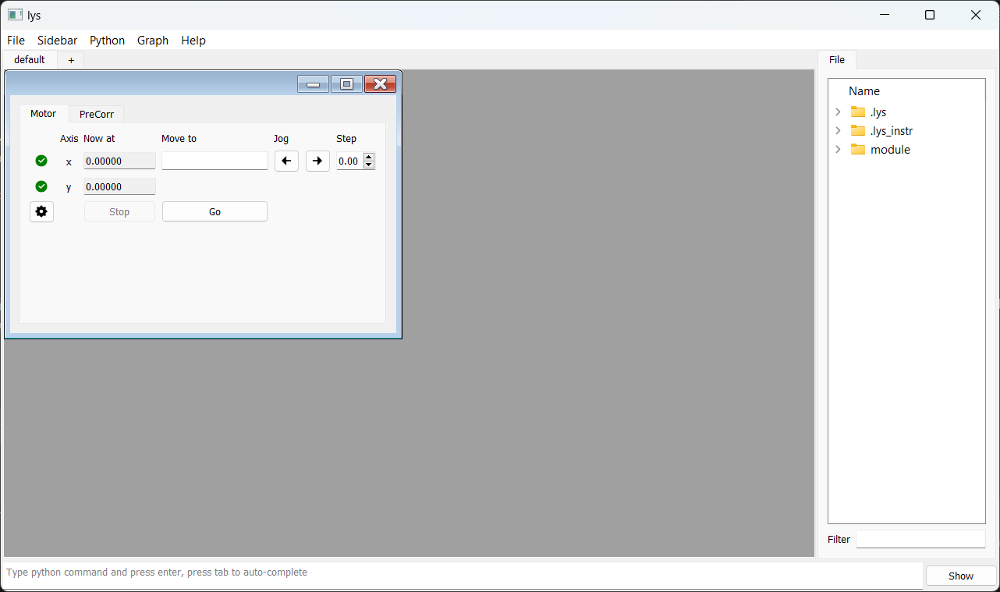
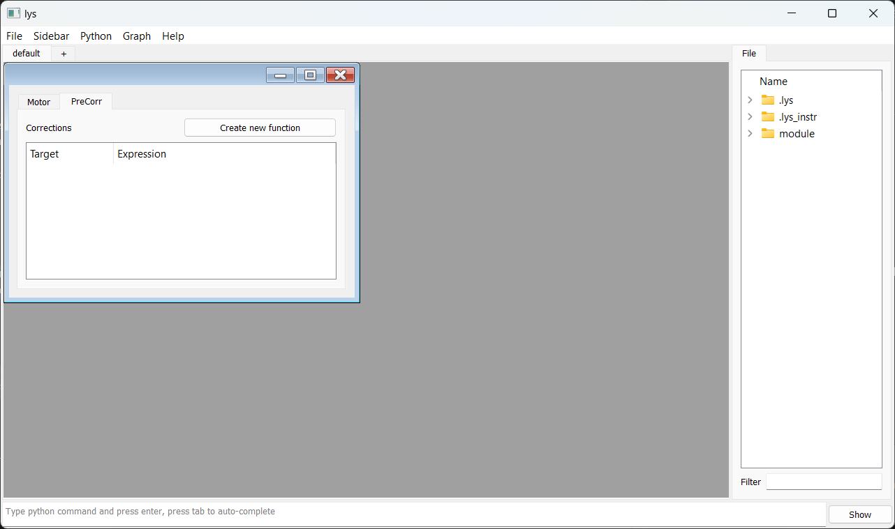
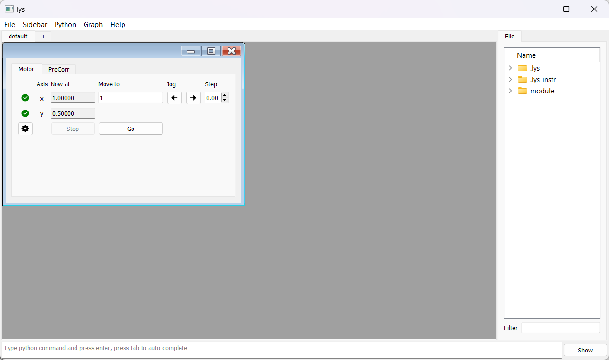
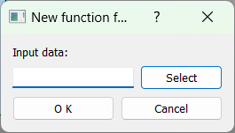
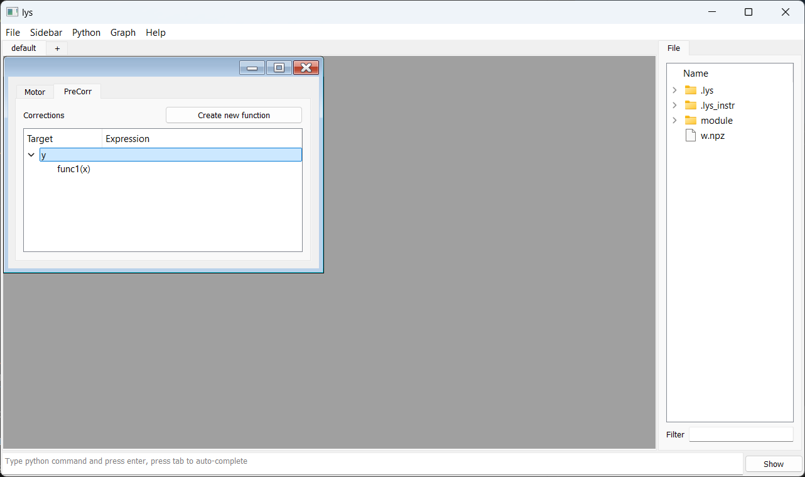

Axis Dependency
By Functions
The PreCorrection utility allows defining dependencies between axes.
Suppose the stop point of “y” always needs to follow that of “x” as a fixed function, for example, y = x/2 while only “x” is directly controlled.
A simple GUI combining a motor and a corrector can be constructed as follows:
from lys.widgets import LysSubWindow
from lys.Qt import QtWidgets
from lys_instr import PreCorrector, gui, dummy
from lys_instr.PreCorrection import _FunctionCombination, _InterpolatedFunction
class Window(LysSubWindow):
def __init__(self, parent=None):
super().__init__(parent)
self._motor = dummy.MultiMotorDummy("x", "y")
self._corrector = PreCorrector([self._motor])
self._initLayout()
self.adjustSize()
def _initLayout(self):
_motorGUI = gui.MultiMotorGUI(self._motor, axisNamesSettable=("x",), axisNamesJoggable=("x",)) # only enable "x" axis control
_correctorGUI = gui.PreCorrectorGUI(self._corrector)
self._tab = QtWidgets.QTabWidget()
self._tab.addTab(_motorGUI, "Motor")
self._tab.addTab(_correctorGUI, "PreCorr")
VBox = QtWidgets.QVBoxLayout()
VBox.addWidget(self._tab)
HBox = QtWidgets.QHBoxLayout()
HBox.addLayout(VBox)
w = QtWidgets.QWidget()
w.setLayout(HBox)
self.setWidget(w)
The resulting GUI appears as follows. Only the “x” axis is enabled for control:
 In the PreCorr tab, right-click on the tree space and select “Add Target” to add a target axis, i.e., “y”.
Then, right-click on the target “y” and select “Add new Variable”, choosing “x” as the variable axis.
You can add multiple variables if needed.
Next, double-click on the expression space of target “y” to enter x/2.
Now, when you enter a target position for “x” in the Motor tab and click Go, the motor will move “x” to the specified position and “y” will automatically be set to half of “x”.
By Data
Such axis dependency can also be defined using user-provided data.
Prepare the data as a Wave object and export it to a NumPy .npz file as follows (see the lys documentation for Wave details):
from lys import Wave
data = [[0.0], [0.1], [0.2]] # Data for your target axis
axes = [[0.0], [0.2], [0.4]] # Corresponding data for your variable axis ("x" for here)
w = Wave(data, axes, variables=['x']) # Specify the variable axis ("x" for here), must be an axis name of the motor
w.export('YourFileName.npz')
In the PreCorr tab, after adding a target axis “y”, right-click on the target and choose “Add new function”.
In the pop-up dialog, click “Select” to import the .npz file from your local directory and click “OK” to approve.
{kind=link}
Expand the “y” tree item, and you can see the imported data listed under “Func1(x)” if the import was successful.
PreCorrection applies the interpolated x–y relation from the file, so the imported data behaves as the previous function-defined dependency for x values within the file’s range (that is, x = 0.0–0.4).